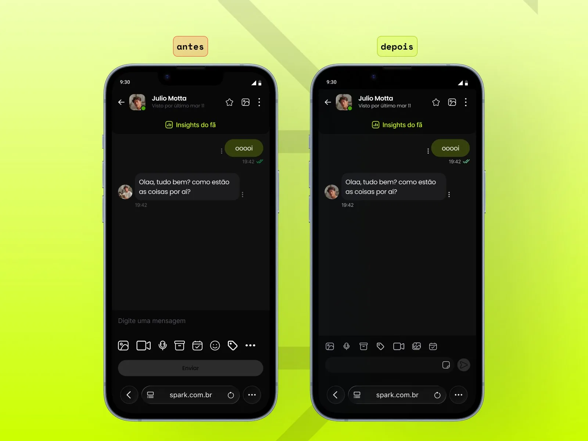
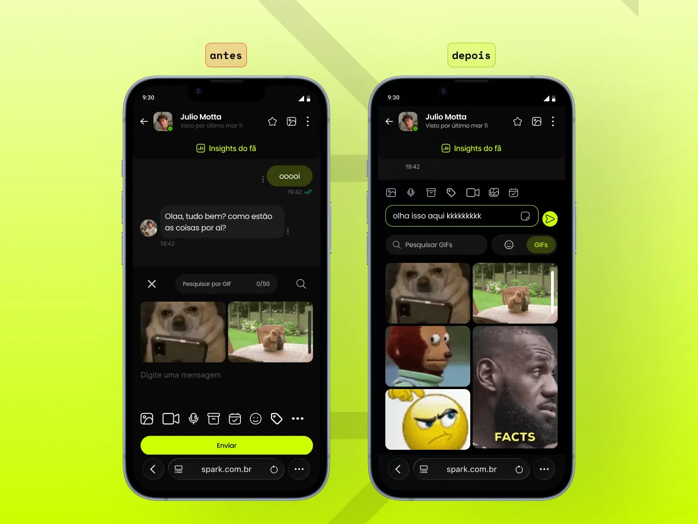

Estudo de caso autoral — redesenho da experiência de chat de uma rede social de monetização, explorando problemas de usabilidade, poluição visual e comportamentos fora do padrão mobile.
A Spark é uma rede social de monetização de conteúdo exclusivo — plataforma escolhida como base para este estudo por ter um chat como ponto central da relação entre creator e fã, usado diariamente por ambos os lados da plataforma.
O chat existente tinha uma série de problemas que afetavam tanto creators quanto assinantes — desde decisões de layout que desperdiçavam espaço até comportamentos que destoavam do padrão esperado em apps mobile. Com mais de 95% dos usuários acessando via mobile, qualquer desvio do comportamento esperado tinha impacto direto na experiência.
Antes de partir para o redesenho, levantei hipóteses sobre o que estava causando a experiência ruim — e por que alinhar ao padrão de mercado seria a abordagem correta.
As soluções foram organizadas por área de impacto — cada uma resolvendo um problema específico sem criar novos. O princípio guia foi simples: o chat deve se comportar como o usuário já espera que um chat se comporte.
O redesenho abrange as visões de Creator e Assinante — com ajustes específicos para cada perfil, respeitando as diferenças de ações disponíveis em cada contexto.
Botão "Enviar" substituído por ícone de seta contextual. Toolbar revisada — tamanho e ordenação dos ícones corrigidos, Gift removido da visão Creator. Altura reduzida de 180px para 117px.

Modal próprio substituído pelo teclado nativo do dispositivo — sem sobreposição da conversa. GIF e Emoji unificados num único ícone com tab switcher e barra de pesquisa integrada.
Faixa estreita substituída por grid de 2 colunas abaixo do campo de digitação — múltiplos GIFs visíveis simultaneamente, com barra de pesquisa e tab switcher Emojis/GIFs.

O estudo resultou em um redesenho completo do chat — com telas e fluxos definidos para as visões de Creator e Assinante, documentando decisões de design para cada problema identificado.